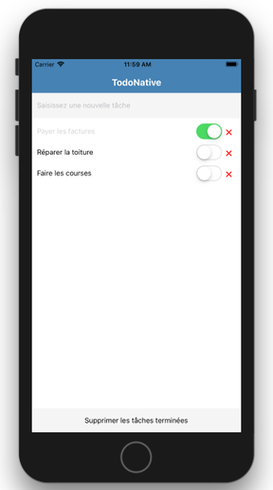

React Native : gestion de l'état
Sommaire
- Partage de l’état entre composants
- Centralisation de l’état
- Gestion de l’état avec MobX
Partage de l’état entre composants
Rappels sur les propriétés
Propriétés (props) = caractéristiques définies au moment de la création du composant.
Les propriétés sont modifiables uniquement par le composant parent.
Rappels sur l’état
Etat (state) = ensemble des données susceptibles d’être modifiées pendant l’exécution de l’application.
Chaque composant React Native possède un état interne, géré avec this.state et this.setState().
Toute modification de l’état déclenche un nouveau rendu du composant.
Problématique
La gestion locale de l’état devient insuffisante lorsqu’un composant doit accéder à ou modifier l’état d’un autre composant.
Nécessité de partager un état commun entre certains composants.
Solution : “lifting state up”
- Remonter l’état au niveau du plus proche composant parent commun.
- Définir les actions de modification dans ce composant parent.
- Dans les composants enfants :
- Remplacer l’état local par des propriétés définies par le parent.
- Remplacer les actions locales par des appels aux actions définies dans le parent.
Application
https://github.com/ensc-mobi/TempConverter

Utilisation de props dans les composants enfants
class TemperatureInput extends React.Component {
_onChangeText = text => {
// Callback passed as component prop is called
this.props.onTemperatureChange(text);
};
render() {
const temperature = this.props.temperature;
const scale = this.props.scale;
const placeholder = `Enter temperature in ${scaleNames[scale]}`;
return (
<TextInput
style={styles.text}
placeholder={placeholder}
value={temperature}
onChangeText={this._onChangeText}
/>
);
}
}
Remontée de l’état dans le composant parent
class Calculator extends React.Component {
constructor(props) {
super(props);
// Common state is lifted in closest parent of TemperatureInput components
// Temperature can be set either in Celsius or in Fahrenheit
this.state = { temperature: "", scale: "c" };
}
_onCelsiusChange = temperature => {
this.setState({ scale: "c", temperature });
};
_onFahrenheitChange = temperature => {
this.setState({ scale: "f", temperature });
};
// ...
Appel aux actions définies dans le parent
// ...
render() {
const scale = this.state.scale;
const temperature = this.state.temperature;
const tempCelsius =
scale === "f" ? tryConvert(temperature, toCelsius) : temperature;
const tempFahrenheit =
scale === "c" ? tryConvert(temperature, toFahrenheit) : temperature;
return (
<View>
<TemperatureInput
scale="c"
temperature={tempCelsius}
onTemperatureChange={this._onCelsiusChange}
/>
<TemperatureInput
scale="f"
temperature={tempFahrenheit}
onTemperatureChange={this._onFahrenheitChange}
/>
<BoilingResult tempCelsius={parseFloat(tempCelsius)} />
</View>
);
}
Centralisation de l’état
Problématique
Les composants parents rassemblent trop de choses :
- Etat commun
- Actions de modification
- Hiérarchie des composants enfants
Non-respect du principe de séparation des responsabilités.
Solution
- Centraliser l’état et les actions de modifications dans des objets dédiés, souvent appelés stores.
- Donner accès à ces objets aux composants via des propriétés.
- Prévoir un mécanisme d’abonnement des composants aux mutations de l’état effectués uniquement dans les stores.
Application
https://github.com/ensc-mobi/TodoNative

Définition d’un store
export default class TodoStore extends Store {
constructor() {
// Call to parent constructor is needed to init observation
super();
// The TODO task is used as key (unique identifier)
// Therefore, each TODO must have a different task
this.todos = [];
}
addTodo = task => {
// Add new TODO at beginning of array
this.todos = [{ task, completed: false }, ...this.todos];
this.notifyObservers();
};
// ...
// Used in parent class when notifying observers
getState() {
const todos = this.todos;
return { todos };
}
}
Notification des changements d’état
Basée sur le Design Pattern Observateur.
export default class Store {
constructor() {
// Define an empty observer list
this.observers = [];
}
// Add new observer to list
addObserver(observer) {
this.observers.push(observer);
}
// Notify all observers of a state change in the store
notifyObservers() {
this.observers.forEach(observer => observer.setState(this.getState()));
}
}
Lien entre store et composant principal
const App = () => {
const todoStore = new TodoStore();
return <MainView todoStore={todoStore} />;
};
export default App;
Abonnement d’un composant
export default class MainView extends React.Component {
constructor(props) {
super(props);
this.state = this.props.todoStore.getState();
this.props.todoStore.addObserver(this);
}
render() {
return (
<View style={styles.container}>
<Header title="TodoNative" />
<Input
placeholder="Saisissez une nouvelle tâche"
onSubmitEditing={this.props.todoStore.addTodo}
/>
// ...
Gestion de l’état avec MobX
Problématique
- Le nombre croissant de composants complique les évolutions de l’état.
- Les mutations de l’état peuvent déclencher un (trop) grand nombre de rendus des composants.
Solution
- Utiliser une librairie dédiée à la gestion de l’état.
- Bon choix pour la plupart des projets de taille intermédiaire : MobX.
# Add MobX to a React Native project
expo install mobx mobx-react
expo install --save-dev babel-preset-mobx

Application
Définition d’une classe métier
import { observable } from "mobx";
export default class Todo {
@observable task;
@observable completed;
constructor(task = "", completed = false) {
this.task = task;
this.completed = completed;
}
toggle() {
this.completed = !this.completed;
}
}
Définition d’un store
import { observable } from "mobx";
import Todo from "../domain/Todo";
export default class TodoStore {
@observable todos;
@observable isLoading = true;
constructor() {
// The TODO task is used as key (unique identifier)
// Therefore, each TODO must have a different task
this.todos = [];
}
addTodo(task) {
const todo = new Todo(task);
// Add new TODO at beginning of array
this.todos = [todo, ...this.todos];
}
// ...
}
Lien entre store et composant principal
const App = () => {
const todoStore = new TodoStore();
return <MainView todoStore={todoStore} />;
};
export default App;
Abonnement d’un composant
import { observer } from "mobx-react";
// ...
@observer
export default class MainView extends React.Component {
onAddTodo = task => {
this.props.todoStore.addTodo(task);
};
// ...
render() {
return (
<View style={styles.container}>
<Header title="TodoNative" />
<Input
placeholder="Saisissez une nouvelle tâche"
onSubmitEditing={this.onAddTodo}
/>
<FlatList
style={styles.todoContainer}
data={this.props.todoStore.todos}
// ...
}
Pourquoi pas Redux ?

- Librairie créée pour adresser des problématiques à l’échelle de Facebook
- Complexe et overkill pour les projets “normaux”
- “You might not need Redux” (écrit par son créateur)